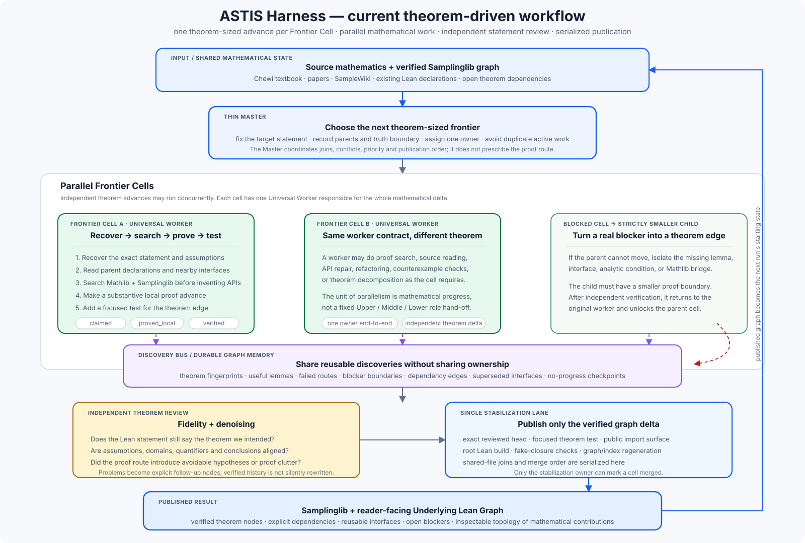
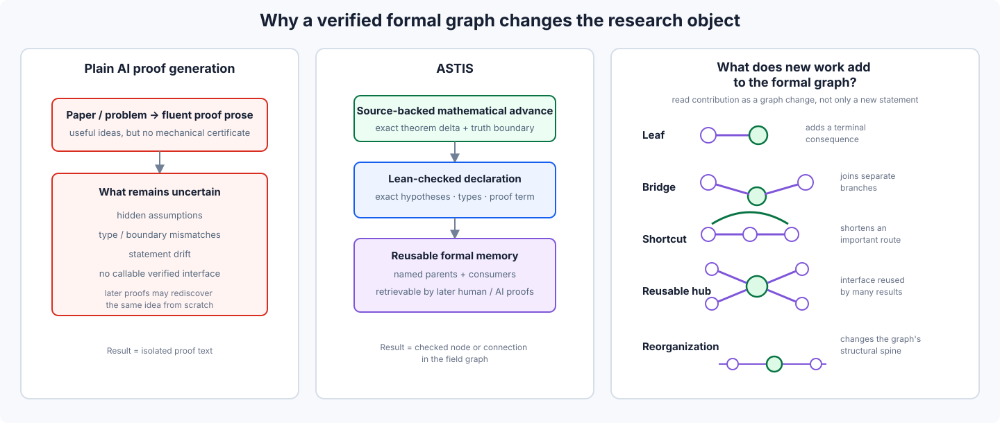

Textbook
Log-Concave Sampling
Chewi's source-aligned textbook graph plus official supplement.
A readable formal library for sampling, optimisation, and geometry: Chewi's sampling and optimisation texts, Boumal's Riemannian optimisation route, statistical optimal transport, a live SampleWiki frontier, and the shared Lean proof graph beneath them.
Chewi's source-aligned textbook graph plus official supplement.
Source-pinned frontier results and theorem-sized graph insertions.
Boumal's eleven chapters on geometry and manifold algorithms.
Sinho Chewi's Lectures on Optimization with formal-upstream reuse.
Chewi · Niles-Weed · Rigollet. Eight chapters and two appendices in the shared reader.
Ising / Glauber, hard-core and matroid sampling. Not continuous-state time discretization.
Fearnhead · Nemeth · Oates · Sherlock. Modern MCMC, shared kernels, scalable algorithms and estimation.
Each theorem-sized task is a Frontier Cell. Parallel workers may explore independently, but shared lower-level lemmas are searched/reused first, new shared foundations get one canonical shared cell, and only independently verified work enters the single stabilization lane.

Definitions, theorem statements, intuition, and proof route in natural language.
Shared lemmas and proof-technique nodes show what really carries the argument.
Exact declarations, hypotheses, dependencies, consumers, source lines, and tests.
ASTIS turns source-backed mathematics into Lean-checked reusable graph memory.

Mathematical derivations with optional Lean and source details.